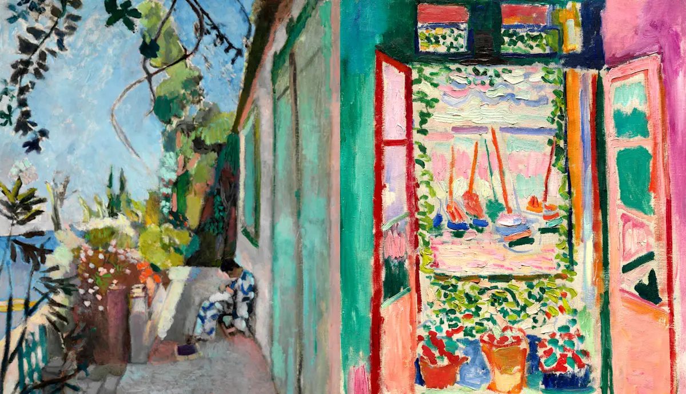
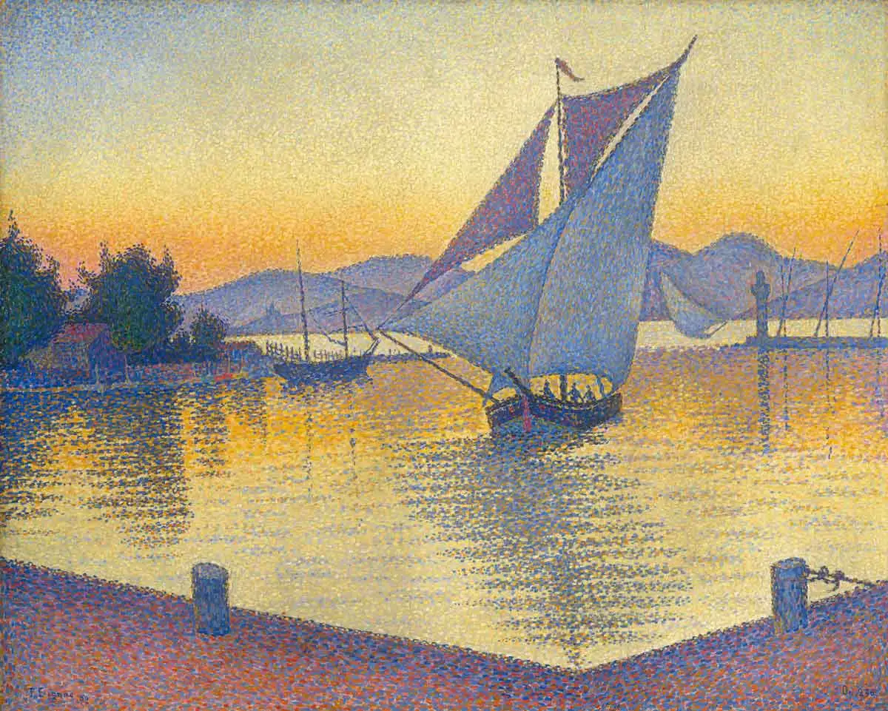
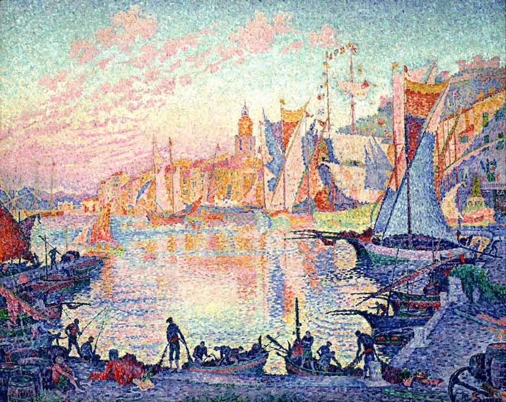
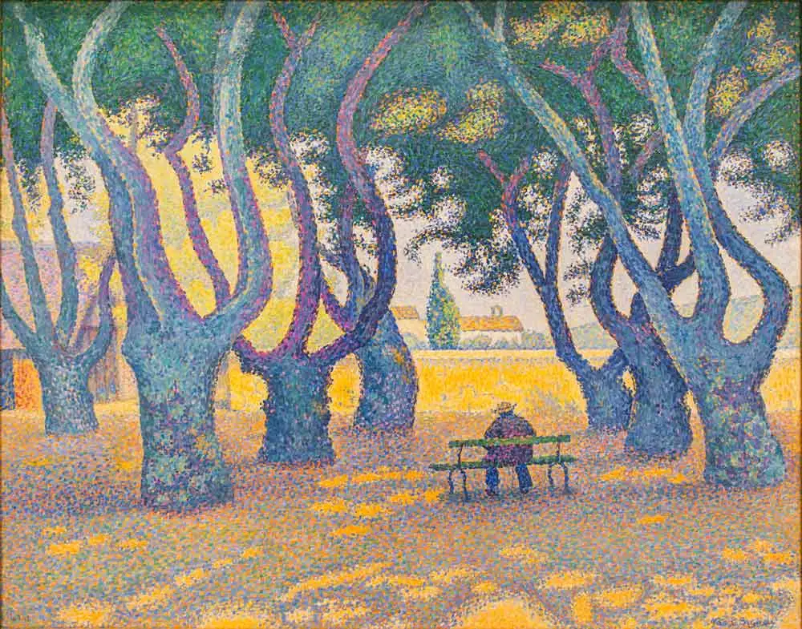
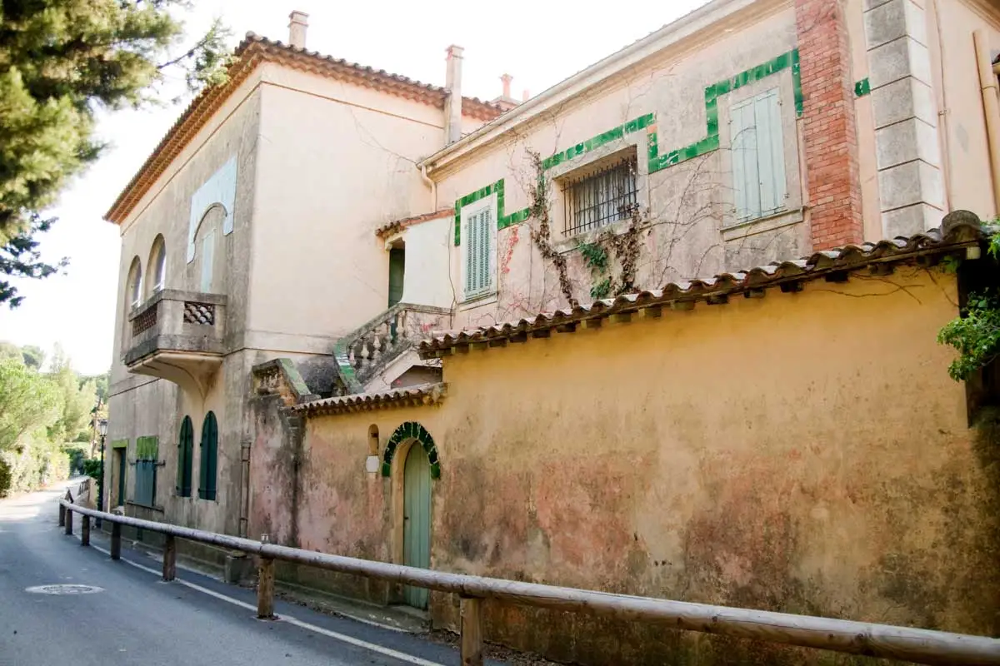
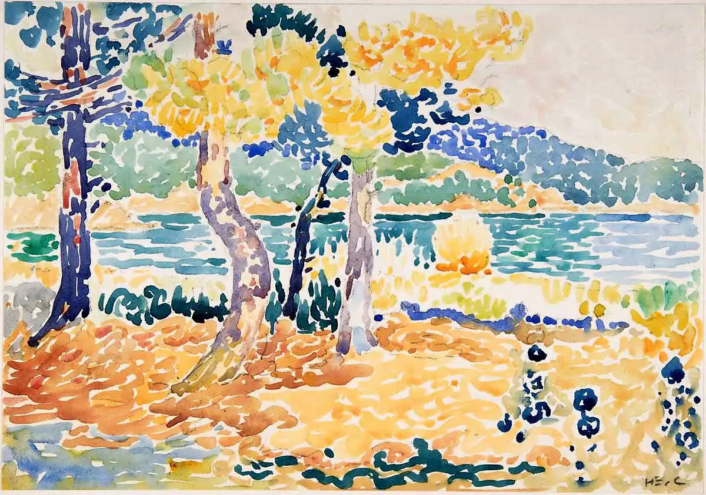

How Paul Signac transformed Saint-Tropez from a fishing harbour into a haven for the avant-gardes
The Pointillist painter Paul Signac settled in the fishing village of Saint-Tropez in 1892. Find out how he transformed this place into one of the centres of avant-garde art.

One of today’s most popular French cities, Saint-Tropez, once was a quiet fishing village. That it’s become so well-known is strongly connected to the painter Paul Signac. It could even be argued that it was him who first altered Saint-Tropez’s original purpose. After arriving in Saint-Tropez on his ship, Signac soon fell in love with its bright colours and beautiful sea views. He decided to buy a house and turn this into his studio. Moreover, he didn’t keep Saint-Tropez to himself, but invited various colleagues to join him. Eventually, Saint-Tropez turned into a centre for avant-garde art. In this article, it will be explored how Signac’s own work and ideas, as well as those of the other painters he invited, contributed to Saint-Tropez’s importance for the development of modern art.
The development of Paul Signac’s style in Saint-Tropez

Paul Signac’s choice to make Saint-Tropez his home in 1892, also marked the onset of a specific phase in his career. During the twenty years following onto his move, he would be travelling between Paris, Brittany and his newly found home at the Southern coast. A year prior to Signac’s move, his dear friend and colleague, George Seurat, had passed away. Both Signac and Seurat had become known as pointillists, but had also been on a mission to make Neo-impressionism well-known and loved. Seurat’s death had come as a shock to Signac, and might even have been one of the reasons why he decided to sail out on his yacht. However, Seurat’s passing did not make him any less eager to further develop, update and improve the Neo-impressionist style. Signac was a man with a great social and artistic agenda, and the move to Saint-Tropez gave him new inspiration.

During this phase in his life, Signac started to play with his style, which was then somewhere between pointillism and Neo-impressionism. He began to let go of the sharper lines that he had thus far applied to most of his compositions. Additionally, Signac also began to change the size and shape of the dots that had been a defining characteristic of the pointillist style. These dots became bigger and started to look more like stripes. What is interesting about these changes, is that Signac reversed the way in which he created demarcated areas in his composition. In the pointillist style, the small dots had created a soft blend of colours that were then framed by sharper lines. In the Neo-impressionist style, these dots changed into stripes, while at the same time the sharper lines were softened. As a way to replace these lines, areas of contrasting colours were placed alongside each other to form demarcated areas. The changes Signac made to his work can be perceived when comparing his pointillist paintings above this paragraph with the Neo-impressionist ones below.

While Saint-Tropez and its surroundings gave Signac valuable new inspiration, he himself also bestowed something important upon this fishing village. Thanks to the nature of his work and his modernist philosophy, he branded Saint-Tropez as a safe haven for avant-garde ideas and creations. Moreover, the alterations Signac, among other artists, made to his work during this period in Saint-Tropez, laid the foundation for the first modern art movement of the twentieth century, called Fauvism.

The word ‘fauve’ means ‘wild’ or ‘wild cat’ in French. In the art, the meaning of this word translates in the use of bright colours and rough, abrupt brushstrokes. The Fauvist art built upon the already loosened brushstrokes and bright, contrasting colours of the Neo-impressionist works. Moreover, Signac wouldn’t remain the only artist working in Saint-Tropez, nor the only one who would create a basis for twentieth-century modern art.
Other Artists Join Paul Signac at his Studio in Saint-Tropez

After buying his villa in Saint-Tropez, called La Hune, Signac transformed a part of it into his studio. Soon after settling in together with his wife and mother, Signac invited other painters to join him. Among these were Henri Matisse, Maximilien Luce, Théo van Rysselberghe, George Braque, Henri-Edmond Cross and André Derain. All of these were influential artists who left their own unique mark on the history of western art. As word spread and the mentioned artists brought their paintings from Saint-Tropez back to Paris, more people gained an interest in this southern fishing village. Saint-Tropez now wasn’t just a beautiful coastal town anymore, but an important art centre in the making. Naturally, many more artists followed in the footsteps of those just mentioned. As direct friends of Signac or otherwise through common connections, also they would spend some time at his studio. One by one, these artists fell under Saint-Tropez’s spell, and within no time, it had turned into a pilgrimage site. Many artists would now come back annually or otherwise every once in a while, to soak up its riches.

Some of the artists who joined Signac in Saint-Tropez, were also part of the ‘Neo circle’. In fact, Signac, Rysselberghe, Cross and Luce became the main figures of the Neo-impressionist movement, and often exhibited together. This means that also these artists brought modern philosophy with to Saint-Tropez, reinforcing the ‘modern tone’ that Signac had already set there. The paintings that these artists created, consisted of many different scenes of Saint-Tropez in the Neo-impressionist style. Among these were views of the ocean or the village of Saint-Tropez, landscape scenes from the close surroundings of this village, scenes of leisure time, as well as some occasional still-lives. Just as the impressionists had done, also the Neo-impressionists depicted rather spontaneous scenes. Fragments out of the everyday lives of normal people. The latter also shows the effect that photography had had on paintings.
Read the full article on www.thecollector.com